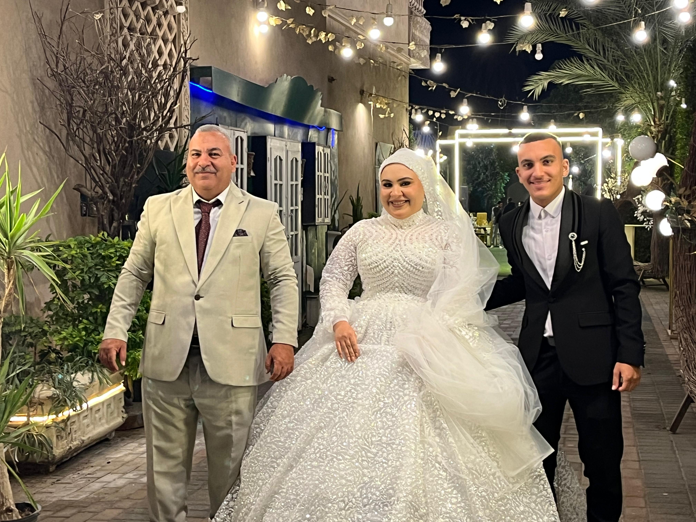

كل صورة ليها ذكرى.. وكل كلمة طالعة من قلبي

الصوره دي متصورينها قبل م نخش القاعه و نسلمها لجوزها كان شعورغريب فرح و في نفس الوقت حزن شعور ما بين ان انهارده فرح اختي و مابين ان من النهارده اختي مش هشوفها غير كل فين و فين و طبعا لانها الكبيره و كل اسراري بحكيهالها ف الموضوع كان صعب عليا بس طلاما شايفها سعيده ف انا اكيد فرحانلها

دي بقا انا و اختي التانيه و امي و الحج قبل بداية الفرح برضو
دي بقا صوره ليا لوحدي انا متصورتش كتير لاني مكنتش فاضي اتصور بس الفوتوغرافر لسا مبعتش الصور بس معاه شوية صور حلوين لما يبعتهم هرفعهم برضو اها ونسيت اقولك بنطلون البدله طويل شويه لان لما جبتها مكنتش فاضي اقيسها غير وقت م انا ماشي ف اضتريت البسها كدا
المهم بعد اما تشوفي الصور ابعتيلي لاني محتاج اتكلم معاكي شويه و افضفض تمام❤️